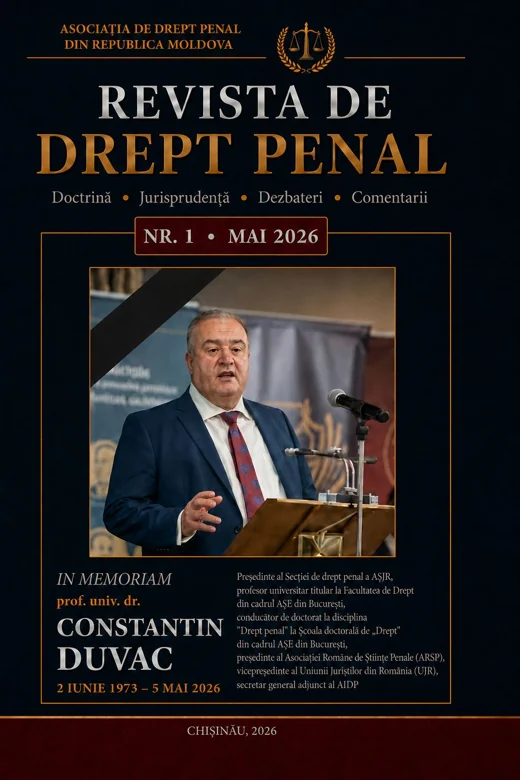

Difuzarea revistei
Asociația asigură difuzarea Revistei de Drept Penal și a altor lucrări de specialitate din domeniul dreptului penal.
Publicația științifică a Asociației, dedicată dreptului penal și științelor penale.

In memoriam prof. univ. dr. Constantin Duvac (2 iunie 1973 – 5 mai 2026)
Cuprins
Membrii Asociației au dreptul să publice, fără achitarea taxei, două articole științifice în revistele de profil ale Asociației. Activitatea autorilor de materiale științifice poate fi remunerată, conform regulamentelor interne aprobate de Președinte (art. 22 alin. 2).
Asociația asigură difuzarea Revistei de Drept Penal și a altor lucrări de specialitate din domeniul dreptului penal.
Sprijină procurarea de literatură juridică penală națională și străină pentru membri și pentru centrul de documentare.
Colaborează cu asociații naționale și internaționale de profil prin schimburi de publicații și încurajează membrii să publice în revistele lor.
Calitatea de membru este deschisă oricărei persoane licențiate în drept care lucrează cu dreptul penal — în cercetare sau în practică.